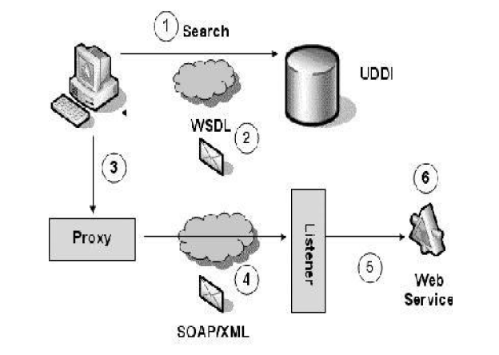
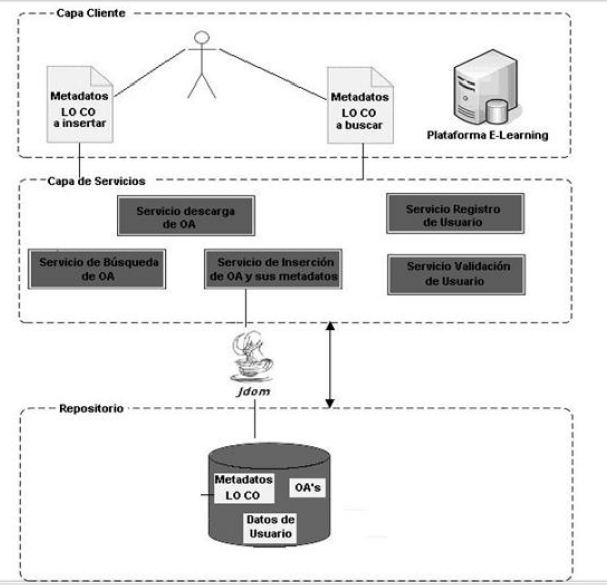

Diseño arquitectónico de OA
Objetivos
- Desarrollar una aplicación web que sirva de repositorio de objetos de aprendizaje, para poder compartirlos.
- La aplicación web debe permitir crear nuevos objetos de aprendizaje así como gestionar los objetos que se encuentran alojados.
- La aplicación debe permitir crear y gestionar usuarios para el acceso a la aplicación, a las herramientas y a los objetos almacenados.
ARQUITECTURA ORIENTADA A SERVICIO (SOA)
En la actualidad el concepto de SOA ha resurgido, gracias al auge y madurez de una nueva tecnología: los Servicios Web. Los Servicios Web se han convertido en el estandarte de SOA, ya que esta tecnología posee un conjunto de características que permiten cubrir todos los principios de la orientación a servicios.
Una arquitectura orientada a servicios (SOA) es una forma de compartir funciones de manera generalizada y flexible.
En general se puede decir que SOA es un modelo de arquitectura que establece un marco de diseño para la integración de aplicaciones independientes de manera que desde la red pueda accederse a sus funcionalidades, las cuales se ofrecen como servicios. La forma más habitual de implementarla es mediante Servicios Web, una tecnología basada en estándares e independiente de la plataforma. Básicamente una arquitectura orientada al servicio es una colección de servicios. Estos servicios se comunican entre si. La comunicación puede involucrar simplemente el paso de datos o la coordinación de alguna actividad entre varios servicios.
La característica principal de SOA es que es una Arquitectura con acoplamiento débil, esto significa que el cliente de un servicio es independiente de la construcción de ese servicio. Una arquitectura SOA está formada por tres agentes: un proveedor, un intermediario y un cliente que no presentan ningún acoplamiento entre ellos.
Tecnologías que soportan a los Servicios Web.
Las tecnologías más importantes que definen la arquitectura de un Servicio Web se pueden observar en la Ilustración 1.

XML (Extensible Markup Language)
En español Lenguaje extensible de etiquetas. Es un estándar para describir datos y crear etiquetas. Las características especiales son la independencia de datos, o la separación de los contenidos de su presentación. El lenguaje XML es una forma, estándar industrial e independiente del sistema, de representar datos. Los datos que se representan usando XML se pueden publicar en múltiples medios porque XML describe la estructura de los datos, no su formato, al
contrario que el HTML, los datos de XML se pueden pasar entre aplicaciones porque la estructura de los datos se puede especificar en un esquema, lo que permite que un analizador de sintaxis valide y procese los datos que siguen el esquema.
WSDL (Web Services Description Language)
En español Lenguaje de descripción de servicios web. Es un formato en XML estandarizado para describir servicios web, en este archivo se describe el nombre, la ubicación y la forma de comunicarse con el servicio, así como los métodos y parámetros que utiliza y la forma en que devuelve la respuesta.
ARQUITECTURA DE REPOSITORIO DE OBJETOS DE APRENDIZAJE CON SERVICIO WEB
La propuesta de diseño de repositorio de objetos de aprendizaje implementada con servicios Web está estructurada en tres capas: capa cliente, capa de servicios y capa de
repositorio como se muestra en la Ilustración 2.
